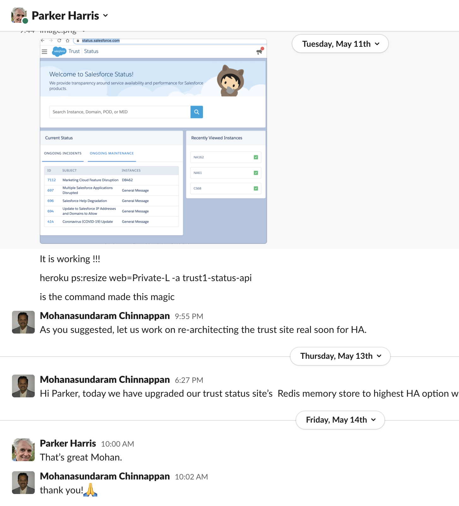
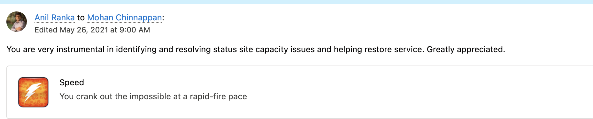
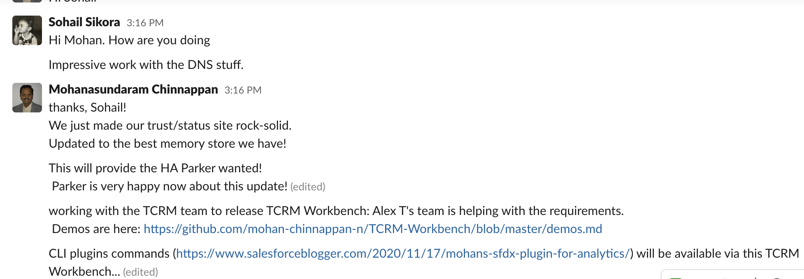
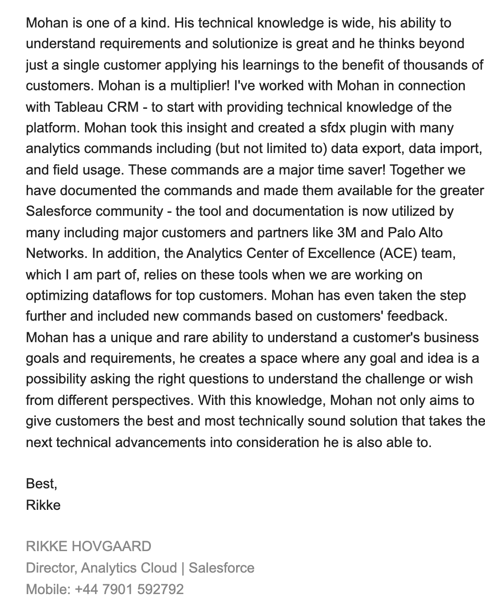
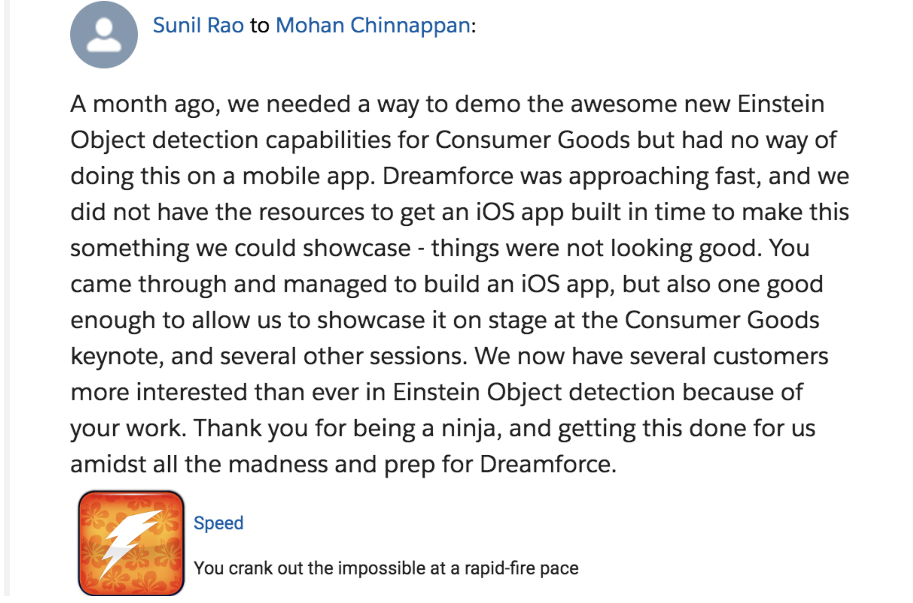

Mohan Chinnappan
Engagement Senior Director - Salesforce.com
Summary
Strategic Thinker with deep knowledge in industry and market to deliver the highest possible value to the customers.
More than 31 years of experience in wide-range of industries aided by strong technical and team skills.
Passionate about building and maintaining great talented teams to build trust with the customers
Known in the industry as an innovator with 4+ US patents spanning enterprise and consumer technologies.
Expert in implementing enterprise and web-scale solutions using Cloud Computing architectures which are used by millions of users worldwide.
Always interested in building the best state-of-art system for the customers to meet the business goals and
enjoys in solving hard problems.
Expert in AI and Deep Learning, responsible for 3+ AI products in the area of Financical Services, Healthcare, Recruiting, Service and Vision.
Author of white papers and articles on Salesforce platform.
Feedback from the customer

Feedback from the Parker Harris, Co-founder of Salesforce
Helped in solving high profile Salesforce Trust Site issue on May-11-2021
Feedback from Salesforce Trust site team lead and CSG leaders
 Feedback from the TCRM ACE Team
White Papers and articles
- Customer Experience (CX) in Financial Services
- Salesforce Platform Events and AWS Lambda
- Salesforce Bulk API 2.0
Education
-
1980 - 1985
Madras University
Bachelor of Engineering (B.E) with Distinction
Experience
Helping to develop SFDC governance and data governance.
Helped in increasing Annual Salesforce Revenue for Fidelity from 5 Millions to 30+ Millions.
Focusing user-adoption and user experience. Helping customers in using cloud computing technologies to achieve their business goals from vision to reality.
As an expert in Integration, Process Automation, Platform Security, Monitoring and Continuous Testing & Integration providing high business value to Salesforce customers.
Providing state-of-the-art solutions using Machine Learning and Deep Learning.
Tools and apps developed to help customers to acheieve business value
- Financial Services Cloud - interactive Data Model and Migration tools
- Tableau CRM CLI
- Tableau CRM Workbench
- Einstein Object Detection App for Consumer Goods 
- Other contributions are list here
Guided the team on development, testing (test-driven-development), deployment. Implemented automation from code-generation to deployment.
Helped in performance tuning of the applications to make them to serve very high traffic.
Contributor in enhancing the User Experience(UX) of the apps. Key components of the stack used: Oracle RDBMS, SOA Infra, Siebel, Oracle Coherence Memory-grid, WebCenter and Oracle identity manager and access manager. Responsible for API development - SOAP and RESTful. Wrote best-practices for service API Design.